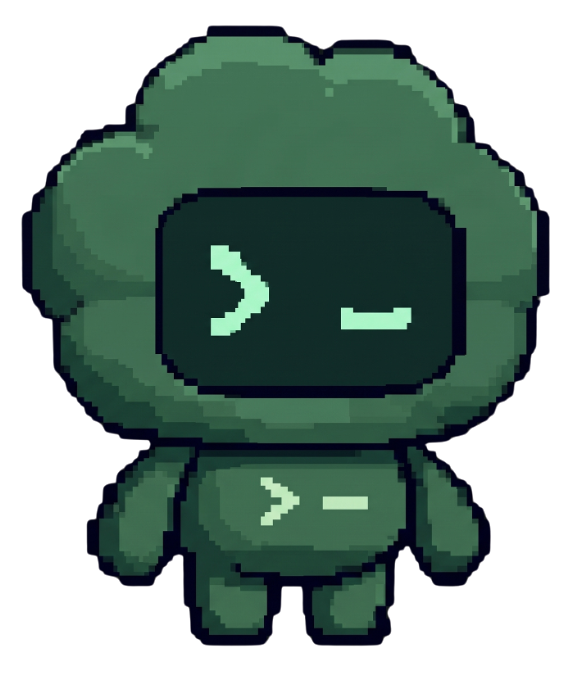

I’m Marco. I build across LLMs, backend and mobile — and bring 4.5 years helping enterprise customers implement and adopt software. Explore ManeMap’s current Kotlin app, its AI architecture, and the evidence behind my work.
Beyond the stack and diagrams, here is the app itself and the decisions behind it.
Founder & AI engineer · 2025–nowLive
ManeMap
A live AI-powered horse-care product with paying subscribers. I built and release its current Kotlin app and Supabase backend, after managing the first React Native version with an external team.
May 2026First release
iOS + AndroidShared Kotlin codebase
01 / Context
Horse, weather, care and training data shape the daily experience.
02 / Grounding
Milo uses a curated bilingual knowledge base and relevant horse context.
03 / Safety
Emergency classification and output sanitisation guard the answer path.
My role: product direction since August 2025; current Kotlin implementation since April 2026. I own architecture, data model, response controls, evaluation and releases. Claude Code and MCP integrations support implementation and QA; I own the decisions and review.
Selected work / 02
Building the product is half the work. Helping teams use it is the other.
Before building ManeMap, I spent 4.5 years helping enterprise customers launch, use and renew software — building on nearly a decade of project delivery.
In practiceProduct decisions get better when you understand how people work after launch.
Customer signalProduct decisionAdoption
2022–2025 / RyteSenior Customer Success Manager
Managed approximately €3 million ARR across around 90 accounts, connecting onboarding, technical issue resolution, adoption and renewals. Helped customers use AI-powered SEO features in their workflows.
Promoted to Senior in September 2023 · Recovered and renewed a €10k/month account
2021–2022 / e-bot7Customer Adoption Manager
Rolled out enterprise AI chatbots, configuring flows, NLU training data, escalations, handover and integrations. At Vienna Airport, unresolved traveller questions became Zendesk tickets, while I onboarded the dedicated bot manager to run content updates after go-live.
2011–2020 / Move-Ment.netProject Manager
Planned and delivered client and event projects across cross-functional teams, then applied lean methods to make workflows clearer and faster.
Recruiter shortcut
Ask the CV directly.

Ask about my experience, technical decisions or role fit. Answers use the published CV and reference its sections. Model-generated answers can still be incomplete or mistaken.
The assistant is instructed to identify missing experience as a gap. Check important details against the source.
AskCV sends your question to Supabase and Google Gemini. Questions and answers are retained for up to 90 days. Privacy details
The assistant is not reachable right now. Marco answers directly at marco.rohns12@gmail.com.
Projects & permanent roles
Where I can help your team.
From a defined AI use case to implementation and adoption. These are the kinds of problems my product and customer-delivery experience can support.
AI implementation
Turn a use case into a working feature.
Connect relevant knowledge and APIs to an LLM workflow, define its response boundaries, and test representative failure cases. Explore Milo’s implementation →
Product engineering
Connect the interface to the system.
Build across Kotlin/Compose Multiplatform, Supabase, PostgreSQL and TypeScript Edge Functions. Define data boundaries and handle model-service failures. Inspect a public AI service →
Delivery
Make the rollout work for customers.
Translate customer needs into configuration, integrations and onboarding. Equip the team to maintain the workflow after launch. See enterprise delivery experience →
Best fit
Applied AI / Product EngineerAI Solutions / ImplementationTechnical Customer Success / TAM
Roles combining hands-on application engineering, technical discovery and customer delivery. Project work can start with a defined workflow, prototype, integration or adoption challenge.
Working fitUplengen, Germany · Open to discussing the right role, project and working model
LanguagesGerman and Spanish native · Professional English
Selected AI learningAI Agent Bootcamp · Foundations of AI · PMI Generative AI
Next step
Need someone who can build the system and help the team use it?
Tell me about the role or project, the users, and what needs to improve. We can define a useful first deliverable together.
Applied AI / Product Engineering · AI Solutions / Implementation · Technical Customer Success / TAM
Availability
Uplengen, Germany · open to the right full-time role, project or collaboration.
Languages
German and Spanish native · professional English.
Current product
ManeMap · Founder & AI Engineer
Built and releases the current Kotlin/Compose Multiplatform app and Supabase backend after managing the initial React Native version with an external team. Live in both stores with paying subscribers.
Owns product direction, architecture, data model, safety logic, evaluation and releases.
Milo combines curated bilingual veterinary knowledge with horse profile, weather and training history.
Health risk is classified before generation; unsafe medication detail is removed after generation.
Historical v117 routing evidence (21 August 2026): 103 offline cases including one known failure; zero unintended regressions; 12/12 live smoke probes. This is not a clinical-safety, retrieval-quality or current-runtime guarantee.
Enterprise AI adoption
e-bot7 · Customer Adoption Manager · 2021–2022
Owned onboarding, rollout, configuration and integrations for enterprise AI chatbots.
Configured conversation flows, NLU training data, fallbacks, escalation and live-agent handover.
At Vienna Airport, routed unanswered traveller questions to Zendesk and onboarded the client’s bot manager.
Managed approximately €3 million ARR across around 90 accounts; owned onboarding, reviews, renewals and expansion.
Promoted to Senior Customer Success Manager in September 2023.
Recovered and renewed a €10k/month enterprise account; drove adoption of AI-powered SEO features.
Project delivery
Move-Ment.net · Project Manager · 2011–2020
Planned and delivered client and event projects across cross-functional teams.
Applied lean methods to make workflows clearer and faster.
Brings nearly a decade of project delivery before the enterprise AI roles.
Project scope
Build, integrate and enable.
Applied LLM features, retrieval and API integration, mobile/backend delivery, technical onboarding and AI adoption. Specialist model training, ML research and large-scale platform engineering are not established by this portfolio.
Source material
Use the detailed record.
The CV holds the career record. The full AI profile includes evidence links and scope limits. AskCV uses curated CV text; its source labels do not independently verify every generated statement.